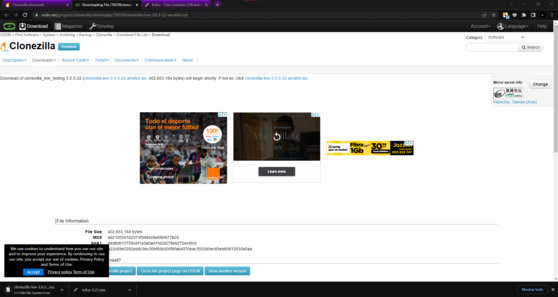
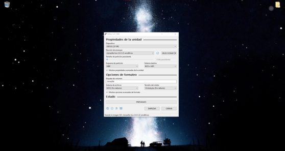
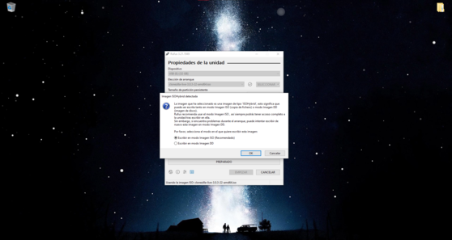
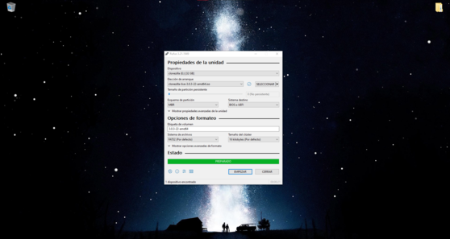
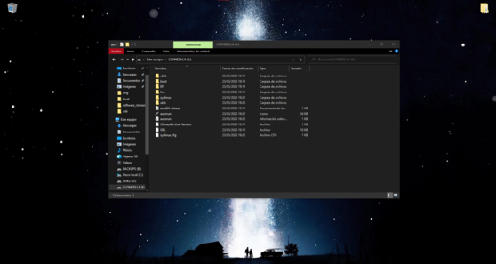

Windows
1Primer paso
Descargamos Rufus, y la iso stable de clonezilla.
2Segundo paso
Ejecutamos Rufus y seleccionamos el usb que queremos bootear, elegimos también la imagen de Clonezilla y el esquema de partición, en este caso utilizaremos MBR.
3Tercer paso
Avast se instalara en segundo plano.
4Cuarto paso
El USB de Clonezilla está preparado para utilizarse.
5Quinto paso
Archivos de Clonezilla booteados en usb de arranque.
